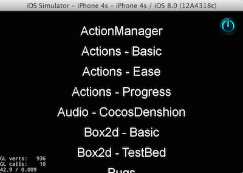
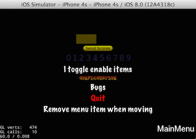

cocos2d-x的下载
可以在 cocos2d-x官方网站 的 Download 下载到最新的cocos2d-x库。
cocos2d-x的基本安装配置
- 解压下载后的程序到个人喜欢的目录。
- 在终端中使用命令行进入解压后的cocos2d-x-xx目录(xx指的版本号)。
- 执行setup.py程序。
py setup.py - 安装过程中，会提示输入NDK根目录，Android根目录，Ant目录。如果开发Android且已经配置好这三个路径，输入即可。如暂不编译为Android程序，可先跳过。(后文再专门讲解Android程序的配置)
- 执行完毕后，运行source命令使配置生效即可。
source ~/.bashrc(如果使用了zsh，则执行source ~/.zshrc) - 这样cocos2d-x的基本配置就完成了。
运行示例程序
cocos2d-x自带了一套完整的 DEMO程序 ，演示了cocos2d-x各种功能的使用，很有教学价值。可以运行后对比源代码与效果，也可以看一下各种库的标准用法。
- 进入 cocos2d-x目录 中的 build 文件夹。
- 双击 cocos2d_tests.xcodeproj，就可以在xcode中打开示例项目啦。
- 输入 command+r ,即可运行示例工程。


创建新工程
cocos2d-x的3.x版本之后使用命令行工具来进行新工程的创建。
- 在终端中查看是否已正确配置好环境变量。
echo $COCOS_CONSOLE_ROOT - 在任意目录下运行，
cocos new命令来创建新工程。(如没配置好环境变量，则需要进入cocos2d安装目录执行) - cocos命令的具体参数如下：
- cocos new [-h] [-p PACKAGE_NAME] -l {cpp,lua,js} [-d DIRECTORY]
[—mac-bundleid MAC_BUNDLEID] [—no-native][-t TEMPLATE_NAME] [--ios-bundleid IOS_BUNDLEID]
[PROJECT_NAME] - PROJECT_NAME为工程名称，-p为包名，-l为语言，-d为目录
- cocos new [-h] [-p PACKAGE_NAME] -l {cpp,lua,js} [-d DIRECTORY]
- 如果我们需要在/defalut目录创建名为 MyGame 的游戏，那么可以使用
cocos new MyGame -l cpp -d /default -p com.mygame进行创建。 - 创建完成后，我们可以在指定的目录下找到名为 PROJECT_NAME 的目录,进入该目录下的 /proj.ios_mac,双击运行 PROJECT_NAME.xcodeproj 即可。
生成文档
如果想查看cocos2d-x的api，我们可以直接在 cocos2d-x官方网站的API Referance 中查看。
如果希望在本地查看文档，我们需要使用工具生成本地文档。
- 我们需要使用 doxygen 这个工具。下载可以到doxygen的官方网站。
- 打开后软件后，选择 File—Open ，之后选择cocos2d-x目录下的 /docs/doxygen.config 打开。
- 选择 Run-Run doxygen 即可生成我们的离线api啦.生成后的文档在cocos2d-x目录下的 /docs/html 中。
本文由金同尧原创，首发于JinTongYao’s blog，转载请注明出处。